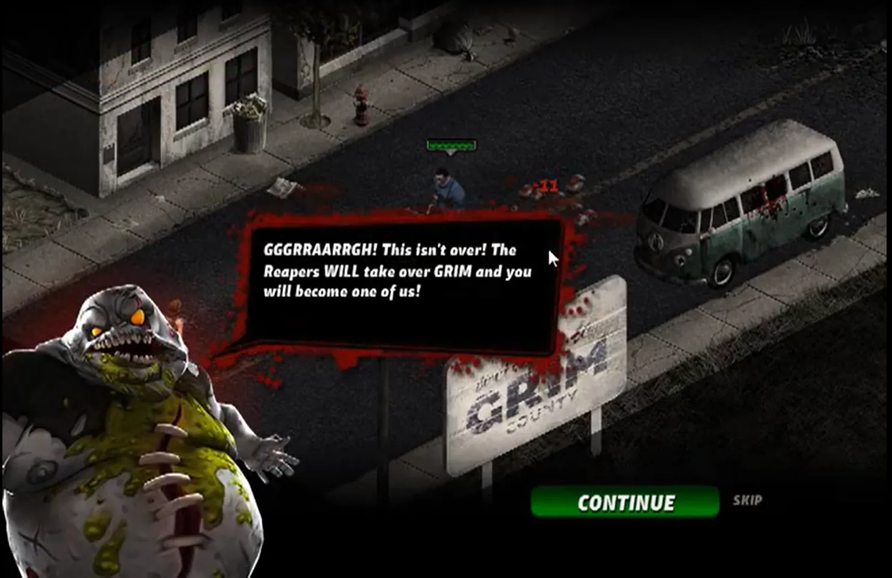
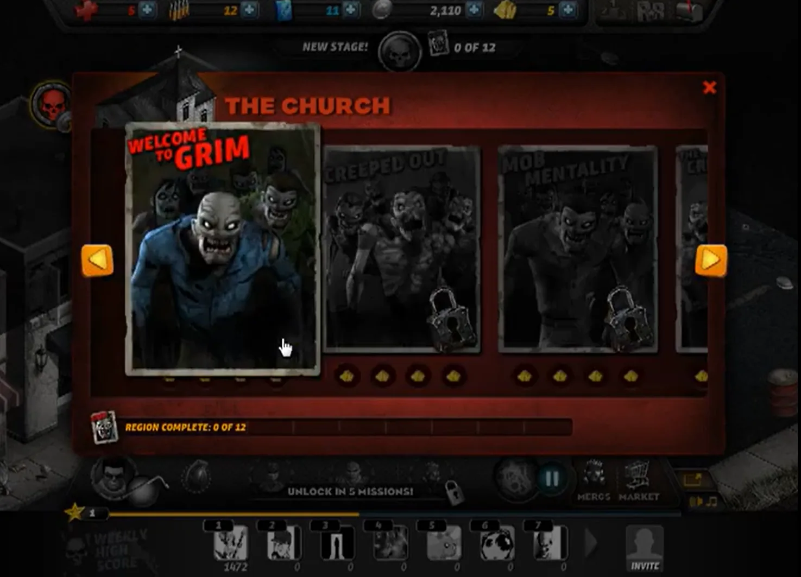
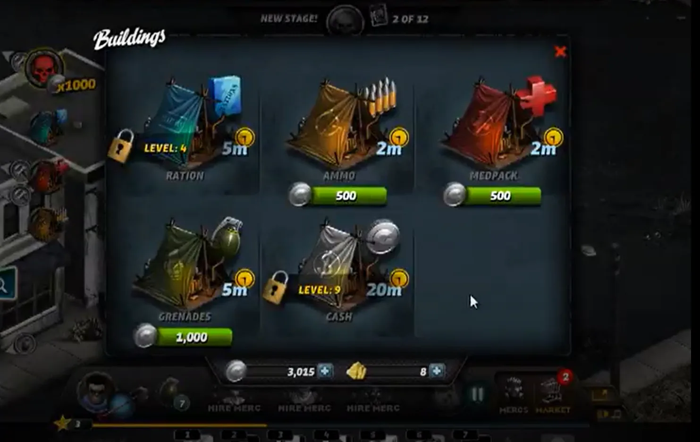

Citizen Grim was a F2P social game that was basically a wave-based shooter. When I came on board the game was already live and had a core user base.

My goal was to create an improved first-time user experience to allow players to immerse themselves into the game and also allow for a small amount of narrative context into the game. Introducing the game's first 'boss' early allowed for some narrative pay-off once the player encountered the enemy later on.

The next thing was adding many different progression features. The game previously was just a never ending wave shooter with progressively harder enemies. By adding progression to the waves, we could also have unlocks tied to them and it gave users something to look forward to.
In addition, we could name certain waves and give them different themes. This added more work on the design side to do a bit more hand-authoring but it also allowed the ability to create waves that were designed with certain weapons or mercenaries (AI companions) in mind, which were of course featured in the store to purchase.

Another core component of the game was building buildings that produced your core resources. There were only limited places these could be built on the map so once they were created, that whole section of the game essentially came to a halt (enemies could still attack and destroy buildings however).
Another thing I introduced for this is multiple regions which means more places to build. These areas could also be scaled for more advanced players as they continued to grow in power with XP and resource collection.
Key Contributions
- Created improved first-time user experience with narrative context
- Added wave progression system with unlocks and themed waves
- Introduced game's first boss encounter for narrative payoff
- Designed multiple regions for expanded building and scaling
- Created hand-authored waves featuring store weapons and mercenaries